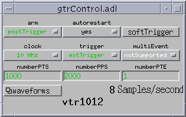
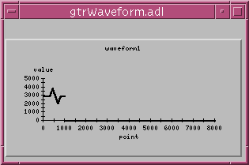
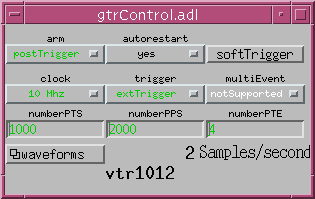
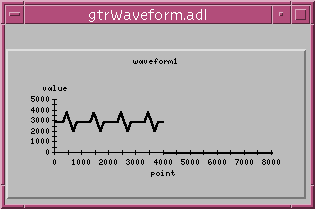
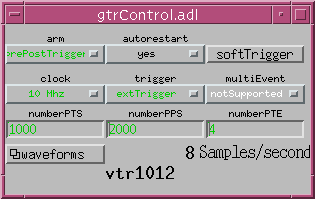
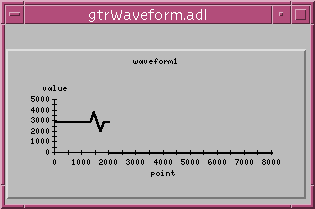

Release 2.1 - June 2005
Marty Kraimer and Eric Norum
GTR is available via the open source license described at the end of this document
GTR (Generic Transient Recorder) is designed to provide support for transient recorders (TR). A TR which can be supported by GTR has:
Data sampling starts when a trigger occurs and stops when the memory of the TR is full or after a configurable number of samples
When the the TR is armed it begins sampling into it's local memory. It uses the memory as a circular buffer. When a trigger occurs it continues recording until a configurable number of additional samples are taken and then stops.
This means that when armed the TR takes multiple postTrigger ot prePostTrigger samples. It will automatically rearm itself after each sample and stop after all events have occured. The number of events and the size of memory for each event is TR dependent. A TR may also provide different event choices for postTrigger and for prePostTrigger mode.
GTR provides the following components:
The following options can be set:
Options provided by TR specific driver.
Options provided by TR specific driver.
Options provided by TR specific driver.
Options provided by TR specific driver.
Options provided by TR specific driver. Typical options are
For some devices other options can not be changed unless the device is disarmed.
The device will start sampling when a trigger is received.
The device will start sampling immediately into a circular buffer. After a trigger an additional numberPTS samples are recorded and the TR stops.
If this is yes then, after all waveforms have been read, the device is automatically rearmed.
Device support does the following. After the recorder has acquired a complete set of data, a device support interrupt routine is called ( the underlying driver support ensures that the recorder is disarmed). The interrupt routine makes a callbackRequest for a routine which reads the data collected by the TR and issues a scanIoRequest. Thus I/O Intr scanned records are processed after all data has been read. This includes the waveform and autorestart records. The PHAS field of the autorestart record should be set so that it is processed after all the waveform records. If the autoReset is true, it rearms the recorder.
GTR is designed to support any hardware that implements the gtrops interface described below. A driver need not implement all functionality. If a driver can't implement a feature it can either not implement a method or just return gtrStatusError. Device support puts a record into alarm condition if a non-supported option is requested.
A device may support features not provided by GTR. If EPICS support is desired for such features, it should be provided via additional device/driver support rather than modifying GTR.
Several files need minor modifications to add GTR support to an application.
The rest of this document describes the components supplied with GTR. The description is top down, i.e. it starts with the MEDM screens used to control a recorder and proceeds down to TR specific drivers. This section briefly describes the components:
The GTR control screen is invoked via statements like:
cd <gtr>/gtrApp/adl medm -x -macro "name=mrk1012" gtrControl.adl
The GTR control screen gives a good description of the functionality GTR provides. A control element will show yellow if a non-supported option is requested. If a control request is made while the TR is armed and the TR driver does not allow changes to an armed TR, the control element will also show yellow.
The following is the medm GTR control screen:

The first two controls are used to arm or disarm the transient recorder. The above display is for a vtr1012. It is armed to collect post trigger data and is automatically rearmed after each set of data has been put into the associated waveform records. It is receiving 8 triggers/second.
NOTE: If autorestart is no then a new arm request must be made in order to arm the TR.
The next five controls specify options
waveforms is a menu that brings up a related display which shows a waveform for a particular channel. For example:

The following shows the control screen and the waveform for a postTrigger request but asking for four events per sample.


The following shows the control screen and the waveform for a prePostTrigger request.


Two database files are provided: gtr.db, and gtrwaveform.db. Each has macro definitions that must be instantiated when the database is loaded. For example the st.cmd file for testing the JoergerVTR1012 transient recorder has the commands:
dbLoadRecords("../../db/gtr.db","name=mrk1012,card=1")
dbLoadRecords("../../db/gtrwaveform.db",
"name=mrk1012,signal=0,card=1,size=8000,type=SHORT")
dbLoadRecords("../../db/gtrwaveform.db",
"name=mrk1012,signal=1,card=1,size=8000,type=SHORT")
dbLoadRecords("../../db/gtrwaveform.db",
"name=mrk1012,signal=2,card=1,size=8000,type=SHORT")
dbLoadRecords("../../db/gtrwaveform.db",
"name=mrk1012,signal=3,card=1,size=8000,type=SHORT")
vtr1012Config(1,0xa100,0x81000000,0x82,0x20000)
The gtr.db file contains all the records used by the gtrContol.adl file. The gtrwavform.db file contains a template for a single waveform record.
The gtr device support has the following database definitions:
device(bo,VME_IO,devGtrBO,"GTR") device(mbbo,VME_IO,devGtrMBBO,"GTR") device(longout,VME_IO,devGtrLO,"GTR") device(stringin,VME_IO,devGtrSI,"GTR") device(waveform,VME_IO,devGtrWF,"GTR") driver(drvGtr)
Thus device support is provided for bo, mbbo, longout, stringin, and waveform records. For all recordtypes the DTYP must be defined as:
field(DTYP,"GTR")
For bo, mbbo, and longout records the OUT field is defined as follows:
field(OUT,"#C<card> S0 &<function>")
where card is the card (link) number of the particular recorder and S0 is ignored.
For bo records function is:
field(SCAN,"I/O Intr") field(PHAS,"1")
For mbbo records function is one of the following:
The TR specific driver supplies the options thus do NOT define any of the state strings.
For longout records function is:
For stringin records the INP field is defined as follows:
field(INP,"#C<card> S0 &<function>")
where card is the card (link) number of the particular recorder and S0 is ignored.
For stringin records function is:
For waveform records the following fields should be defined:
field(DTYP,"GTR") field(OUT,"#C<card> S<signal> &readData") field(SCAN,"I/O Intr") field(NELM,"<size>") field(FTVL,"<type>")
where
A waveform record should always be declared as I/O Intr scanned, which causes it to be processed after a complete set of data has been collected. What constitutes a complete set of data depends upon the options chosen:
A set if numberPTS elements is collected.
The complete array as specified by numberPPS is collected. The first (numberPPS - numberPTS) elements are samples before the trigger and the last numberPTS elements are values collected after the trigger.
drvGtr provides an interface between device support and hardware specific drivers. It implements an interface that device (or other higher level code) calls. It also defines an interface that each hardware specific driver can implement and register. Thus drvGtr acts as a generic interface layer above hardware specific support.
The interfaces are defind in drvGtr.h as follows:
typedef void *gtrPvt;
typedef void (*gtrhandler)(void *pvt);
typedef short int16;
typedef enum {gtrStatusOK=0,gtrStatusBusy=-1,gtrStatusError=-2} gtrStatus;
typedef struct gtrchannel {
int len; /*size of pdata array*/
int ndata; /*number of elements readMemory put into array*/
int16 *pdata;
int ftvl; /*type of data to which pdata points*/
}gtrchannel;
typedef struct gtrops {
void (*init)(gtrPvt pvt);
void (*report)(gtrPvt pvt,int level);
gtrStatus (*clock)(gtrPvt pvt, int value);
gtrStatus (*trigger)(gtrPvt pvt, int value);
gtrStatus (*multiEvent)(gtrPvt pvt, int value);
gtrStatus (*preAverage)(gtrPvt pvt, int value);
/*PTS PostTriggerSamples*/
gtrStatus (*numberPTS)(gtrPvt pvt, int value);
/*PPS PrePost Samples*/
gtrStatus (*numberPPS)(gtrPvt pvt, int value);
/*PTE PostTrigger Events */
gtrStatus (*numberPTE)(gtrPvt pvt, int value);
gtrStatus (*arm)(gtrPvt pvt, int type);
gtrStatus (*softTrigger)(gtrPvt pvt);
/*papgtrchannel is nchannels array of pointers to gtrchannel*/
gtrStatus (*readMemory)(gtrPvt pvt, gtrchannel **papgtrchannel);
gtrStatus (*readRawMemory)(gtrPvt pvt, gtrchannel **papgtrchannel);
gtrStatus (*getLimits)(gtrPvt pvt, int16 *rawLow,int16 *rawHigh);
gtrStatus (*registerHandler)(gtrPvt pvt,gtrhandler usrIH,void *handlerPvt);
int (*numberChannels)(gtrPvt pvt);
int (*numberRawChannels)(gtrPvt pvt);
gtrStatus (*clockChoices)(gtrPvt pvt,int *number,char ***choice);
gtrStatus (*armChoices)(gtrPvt pvt,int *number,char ***choice);
gtrStatus (*triggerChoices)(gtrPvt pvt,int *number,char ***choice);
gtrStatus (*multiEventChoices)(gtrPvt pvt,int *number,char ***choice);
gtrStatus (*preAverageChoices)(gtrPvt pvt,int *number,char ***choice);
gtrStatus (*name)(gtrPvt pvt,char *pname,int maxchars);
void (*setUser)(gtrPvt pvt,void * userPvt);
void *(*getUser)(gtrPvt pvt);
void (*lock)(gtrPvt pvt);
void (*unlock)(gtrPvt pvt);
}gtrops;
gtrPvt gtrFind(int card,gtrops **ppgtrops);
void gtrRegisterDriver(int card,
const char *name,gtrops *pgtrdrvops,gtrPvt drvPvt);
gtrops is the interface implemented by drvGtr and also by each device specific driver. Device support calls drvGtr which calls the device specific driver. Device support locates the interface by calling gtrFind which, if successful, sets the address of gtrops.
Each TR specific driver must register itself with drvGtr by calling gtrRegisterDriver. This scheme allows multiple types of TRs in a single IOC.
Many of the routines return a gtrStatus. This defined the following values:
This is the driver which is called by device support. If a particular method is provided by the device specific driver it is called.
This provides support for the Joerger VTR10010 ttransient recorder. The following command must appear in a startup file before iocInit:
vtr10010Config(card,a16offset,a32offset,intVec)
The vtr10010 provides the following options:
This provides support for the Joerger VTR1012 ttransient recorder. The following command must appear in a startup file before iocInit:
vtr1012Config(card,a16offset,a32offset,intVec,channelArraySize)
The vtr1012 provides the following options:
This provides support for the Joerger VTR10012, VTR10012_8, VTR8014, and VTR8014 recorders. The VTR10012_8 only supports single event postTrigger of 1024 samples.
The following command must appear in a startup file before iocInit:
vtr10012Config(card,a16offset,a32offset,intVec,intLev,useDma,nchannels,kilosamplesPerChan)
The vtr10012 provides the following options:
NOTES:
This provides support for the Joerger VTR812/10 and VTR812/40. The only model tested was the VTR812/10 without the multiPrePost option.
The following command must appear in a startup file before iocInit:
vtr812Config(card,a16offset,a32offset,intVec)The vtr812 provides the following options:
If multiPrePost option is not available then exactly one prePostTrigger event is preformed
If multiPrepost option is available this menu selects number of prePostTrigger events.
This provides support for the Struck SIS3300 and SIS3301 Fast ADC. The following command must appear in a startup file before iocInit:
sisfadcConfig(card,clockspeed,a32offset,intVec,intLev,useDma)
NOTES:
The following options are supported:
Testing was done as follows
When postTrigger arm is selected, then the number of triggers as selected by multiEvent are selected. Each time a trigger arrives the data is stored in the next event memory. After numberPTS samples are collected, the sisfadc stops, advances the event counter, and waits for the next trigger. After all the triggers have been received, numberPTS samples for each trigger are read from the sisfadc.
When prePostTrigger is selected data collection is started immediately using the first event memory as a circular buffer. When the stop trigger arrives, and additional numberPTS signals are accepted. The sisadc then advances the event counter, starts sampling into the new event memory, etc. After all triggers have been processed, data is read from the sisfac. All elements of each event memory are read.
When postTrigger is selected data collection begins when the trigger signal goes active and continues for numberPTS samples after the trigger signal goes inactive. When numberPTE trigger signals have occurred all data samples are read.
If the one wire ID register option is present the TR name is formed by appending the clock speed and serial number to the base device (e.g. sis3301-80 SN 1478).
As mentioned above a TR specific driver must:
Look at an existing TR specific drivers for an example.
The methods provided by gtrops are:
| init | EPICS calls this during driver initialization. |
| report | EPICS calls this when a dbior request is issued. |
| clock | This is called when clock options are being changed. The TR driver determines the options by implementing clockChoices below. |
| trigger | This is called when trigger options are being changed. The TR driver determines the options by implementing triggerChoices below. |
| multiEvent | This is called when multiEvent options are being changed. The TR driver determines the options by implementing multiEventChoices below. If the TR doesn't support multiple events this method should not be implemented.. |
| preAverage | This is called when preAverage options are being changed. The TR driver determines the options by implementing preAverageChoices below. If the TR doesn't support multiple events this method should not be implemented.. |
| numberPTS | The number of post trigger samples. If the user requests more samples than the TR can accept, it should return gtrStatusError. |
| numberPPS | PrePost samples. For prePostTrigger arm requests this the the total number of samples that will be returned for each event. |
| numberPTE | Number of postTrigger events. This is only used if the TR can support a different number of events for postTrigger and prePostTrigger. |
| arm | This is called when arm options are being changed. The TR driver determines the options by implementing armChoices below. A TR should always provide disarm and postTrigger as the first two choices and prePostTrigger as the third choice if it can provide this capibility. If the caller selects disarm the TR must disarm itself even if active. If postTrigger or prePostTrigger is selected it must start the requested operation. |
| softTrigger | Issue a softTrigger. |
| readMemory | Read the data collected during the last data acquisition cycle. See below for details. |
| readRawMemory | Read the data collected during the last data acquisition cycle and store in device-dependent raw format. See below for details. |
| getLimits | Get the raw limits for the adc readings. |
| registerHandler | This registers the users interrupt handler which is called when data acquisition is complete. The handler can be called from interrupt level. |
| numberChannels | Returns the number of channels that the TR provides. |
| numberRawChannels | Returns the number of channels that the TR provides in its device-dependent raw format. |
| clockChoices | Sets the clock choices. See below for how to specify choices. |
| armChoices | Sets the arm choices. See below for how to specify choices |
| triggerChoices | Sets the trigger choices. See below for how to specify choices. |
| multiEventChoices | Sets the multiEvent choices. See below for how to specify choices. |
| preAverageChoices | Sets the preAverage choices. See below for how to specify choices. |
| name | Returns a name for the TR. |
| setUser | Implemented by drvGtr. It should not be implemented or called by a TR specific driver. |
| getUser | Implemented by drvGtr. It should not be implemented or called by a TR specific driver. |
| lock | Implemented by drvGtr. A TR specific driver can call it if it is performing an operation that it doesn't want interrupted. |
| unlock | Implemented by drvGtr. A TR specific driver can call it if it is performing an operation that it doesn't want interrupted. |
A device specific driver can implement methods that supply choices for clock, arm, etc. In each case the method sets the number of choices and an array of pointers to character strings specifying the choices. Since devGtr calls these methods during mbbo record initialization, the number of choices should be at most 16 and the maximum string length should be 15 and should be terminated with a null character. An example definition is:
#define nclockChoices 14
static char *clockChoices[nclockChoices] = {
"100 MHz","50 MHz","25 MHz","10 MHz",
"5 MHz","2.5 MHz","1 MHz",
"Ext","Ext/2","Ext/4","Ext/10",
"Ext/20","Ext/40","Ext/100",
};
...
STATIC gtrStatus vtrclockChoices(gtrPvt pvt,int *number,char ***choice)
{
*number = nclockChoices;
*choice = clockChoices;
return(gtrStatusOK);
}
The device specific driver is responsible for reading data from the device into an array of gtrchannels, which has the following definition:
typedef struct gtrchannel {
int len; /*size of pdata array*/
int ndata; /*number of elements readMemory put into array*/
int16 *pdata;
int ftvl; /*menuFtypeXXXX of buffer to which pdata points*/
}gtrchannel;
The caller, e.g. devGtr, is resonsible for:
When the readMemory or readRawMemory method is called it expected to put data into the array specified by pdata and set ndata equal to the number of elements it put into pdata. It must not overrun the array, i.e. it must not put more than len elements into the array. It must honor the numberPTS and numberPPS fields. It may check the ftvl field to ensure that the receiver is of the correct data type.
Copyright (c) 2002 University of Chicago. All rights reserved.
GTR is distributed subject to the following license conditions:
SOFTWARE LICENSE AGREEMENT
Software: GTR
1. The "Software", below, refers to GTR (in either source code, or
binary form and accompanying documentation). Each licensee is
addressed as "you" or "Licensee."
2. The copyright holders shown above and their third-party licensors
hereby grant Licensee a royalty-free nonexclusive license, subject to
the limitations stated herein and U.S. Government license rights.
3. You may modify and make a copy or copies of the Software for use
within your organization, if you meet the following conditions:
a. Copies in source code must include the copyright notice and this
Software License Agreement.
b. Copies in binary form must include the copyright notice and this
Software License Agreement in the documentation and/or other
materials provided with the copy.
4. You may modify a copy or copies of the Software or any portion of it,
thus forming a work based on the Software, and distribute copies of
such work outside your organization, if you meet all of the following
conditions:
a. Copies in source code must include the copyright notice and this
Software License Agreement;
b. Copies in binary form must include the copyright notice and this
Software License Agreement in the documentation and/or other
materials provided with the copy;
c. Modified copies and works based on the Software must carry
prominent notices stating that you changed specified portions of
the Software.
5. Portions of the Software resulted from work developed under a U.S.
Government contract and are subject to the following license: the
Government is granted for itself and others acting on its behalf a
paid-up, nonexclusive, irrevocable worldwide license in this computer
software to reproduce, prepare derivative works, and perform publicly
and display publicly.
6. WARRANTY DISCLAIMER. THE SOFTWARE IS SUPPLIED "AS IS" WITHOUT WARRANTY
OF ANY KIND. THE COPYRIGHT HOLDERS, THEIR THIRD PARTY LICENSORS, THE
UNITED STATES, THE UNITED STATES DEPARTMENT OF ENERGY, AND THEIR
EMPLOYEES: (1) DISCLAIM ANY WARRANTIES, EXPRESS OR IMPLIED, INCLUDING
BUT NOT LIMITED TO ANY IMPLIED WARRANTIES OF MERCHANTABILITY, FITNESS
FOR A PARTICULAR PURPOSE, TITLE OR NON-INFRINGEMENT, (2) DO NOT ASSUME
ANY LEGAL LIABILITY OR RESPONSIBILITY FOR THE ACCURACY, COMPLETENESS,
OR USEFULNESS OF THE SOFTWARE, (3) DO NOT REPRESENT THAT USE OF THE
SOFTWARE WOULD NOT INFRINGE PRIVATELY OWNED RIGHTS, (4) DO NOT WARRANT
THAT THE SOFTWARE WILL FUNCTION UNINTERRUPTED, THAT IT IS ERROR-FREE
OR THAT ANY ERRORS WILL BE CORRECTED.
7. LIMITATION OF LIABILITY. IN NO EVENT WILL THE COPYRIGHT HOLDERS, THEIR
THIRD PARTY LICENSORS, THE UNITED STATES, THE UNITED STATES DEPARTMENT
OF ENERGY, OR THEIR EMPLOYEES: BE LIABLE FOR ANY INDIRECT, INCIDENTAL,
CONSEQUENTIAL, SPECIAL OR PUNITIVE DAMAGES OF ANY KIND OR NATURE,
INCLUDING BUT NOT LIMITED TO LOSS OF PROFITS OR LOSS OF DATA, FOR ANY
REASON WHATSOEVER, WHETHER SUCH LIABILITY IS ASSERTED ON THE BASIS OF
CONTRACT, TORT (INCLUDING NEGLIGENCE OR STRICT LIABILITY), OR
OTHERWISE, EVEN IF ANY OF SAID PARTIES HAS BEEN WARNED OF THE
POSSIBILITY OF SUCH LOSS OR DAMAGES.